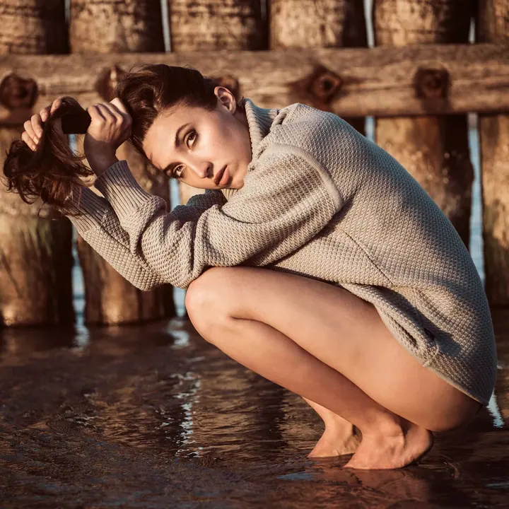

Portrétní fotografie
Reprezentativní portréty žen i mužů podle toho, k čemu je potřebujete, třeba business fotky do práce nebo portréty pro soukromé použití. Hledám vhodné světlo a snažím se zachytit vaši osobnost.

Jmenuji se Eva Hobzová a v Olomouci fotím portréty, glamour, boudoir a akt. Ráda fotím také maminky s dětmi a celé rodiny, v ateliéru i venku. Na fotografii mě nejvíc za…
Rezervovat termínFotografování jsem se profesionálně začala věnovat ve třiceti letech. Pocházím z Ostravy-Poruby, kde jsem od čtyř do šestnácti let chodila do Lidové školy umění na výtvarný a literárně-dramatický obor. Výtvarná tvorba mi dala cit pro kompozici a barvu, divadlo mě naučilo klást důraz na výraz a emoce.


Na Filozofické fakultě Univerzity Palackého v Olomouci jsem vystudovala filozofii a ukrajinskou filologii a zabývala jsem se vztahem myšlení a emocí. Kvůli tomu jsem studovala i psychologii. Postupně mi došlo, že je mi bližší emoce zachycovat a zobrazovat než je jen teoreticky zkoumat, a k tomu je fotografie ideální.
Naplno jsem se fotografii začala věnovat před narozením druhého syna. V Olomouci jsem absolvovala dvouletý kurz tvůrčí fotografie v České fotoškole a dál se pravidelně vzdělávám na kurzech a workshopech u nás i v zahraničí. Za svou práci jsem získala ocenění Portrait Photo Award.
Co fotím
Reprezentativní portréty žen i mužů podle toho, k čemu je potřebujete, třeba business fotky do práce nebo portréty pro soukromé použití. Hledám vhodné světlo a snažím se zachytit vaši osobnost.
Fotografování krásy ženského těla. Udělejte si radost samy pro sebe a podívejte se na sebe novýma očima.
Fotím maminky s dětmi a celé rodiny v ateliéru i venku. Láskyplné a přirozené chvíle, hry, mazlení, kojení i šátkování.
Těhotenství je v životě každé ženy jedinečné. Snažím se zachytit radost z očekávání miminka a něžné chvíle s partnerem nebo s dětmi.
Fotografie jsou ilustrační
Postup
Napište mi nebo zavolejte, o jaké focení máte zájem a k čemu fotky budou. Podle toho společně vymyslíme podobu focení.
Domluvíme se, jestli budeme fotit v ateliéru, nebo venku, a poradím vám s oblečením a celkovou atmosférou.
Fotíme v klidu a bez spěchu. Hlídám světlo, kompozici a hlavně výraz, aby na fotkách byla vidět vaše osobnost.
Z focení vyberu nejlepší snímky a pečlivě je upravím. Hotové fotografie vám pak předám.
Otázky
Portrétní focení začíná od 3 450 Kč, rodinné od 4 500 Kč. Přesnou cenu vám řeknu, jakmile se domluvíme na rozsahu focení.
Určitě. Celým focením vás provedu a s pózováním vám pomůžu. Cítit se krásná a sebevědomá není výsada, je to právo každé ženy.
Obojí. Portréty i rodinné fotky dělám v ateliéru i v exteriéru, záleží na tom, jakou atmosféru chcete.
Ano. Fotím reprezentativní portréty žen i mužů, ať už je potřebujete do práce, nebo pro sebe.